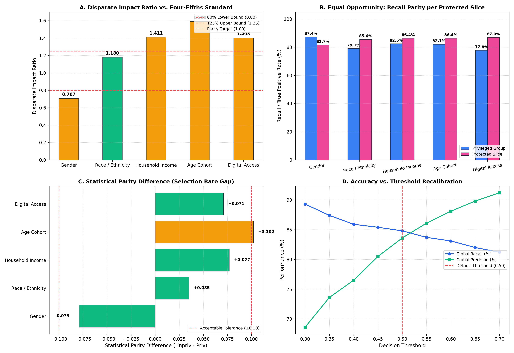

Formal auditing of Disparate Impact (Four-Fifths Rule), Statistical Parity, and Equal Opportunity across protected student demographic and socioeconomic strata.

| Protected Dimension | Comparison Groups | Sample Sizes | Disparate Impact | Statistical Parity | Equal Opp. (Recall Parity) | Four-Fifths Compliance |
|---|---|---|---|---|---|---|
| Gender | Priv: Male Unpriv: Female |
1417 / 1600 | 0.707 | -0.079 | 87.4% vs. 81.7% (-0.057) | UNDER-FLAGGED (<0.80) |
| Household Income | Priv: > Median (R$ 930) Unpriv: <= Median (R$ 930) |
1508 / 1509 | 1.411 | +0.077 | 82.5% vs. 86.4% (+0.039) | OVER-FLAGGED (>1.25) |
| Age Cohort | Priv: Traditional (<= 20 yrs) Unpriv: Adult / Non-traditional (>= 21 yrs) |
1388 / 1629 | 1.590 | +0.102 | 82.1% vs. 86.4% (+0.043) | OVER-FLAGGED (>1.25) |
| Digital Access | Priv: Owns >=1 Laptop Unpriv: No Laptop (0) |
883 / 2134 | 1.403 | +0.071 | 77.8% vs. 87.0% (+0.092) | OVER-FLAGGED (>1.25) |
Evaluates how modifying the classification cutoff threshold impacts the trade-off between global predictive sensitivity and subgroup fairness.
| Threshold | Global Recall | Global Precision | Gender Disparate Impact | Gender Equal Opp. Diff |
|---|---|---|---|---|
0.30 |
89.3% | 68.6% | 0.796 | -0.053 |
0.35 |
87.4% | 73.6% | 0.776 | -0.047 |
0.40 |
85.9% | 76.5% | 0.766 | -0.049 |
0.45 |
85.4% | 80.5% | 0.726 | -0.056 |
0.50 (Default) |
84.8% | 83.6% | 0.707 | -0.057 |
0.55 |
83.7% | 86.1% | 0.713 | -0.068 |
0.60 |
83.1% | 88.1% | 0.697 | -0.075 |
0.65 |
82.0% | 89.8% | 0.676 | -0.089 |
0.70 |
81.2% | 91.2% | 0.678 | -0.093 |